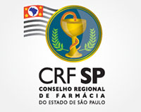

O I Curso de Inverno em Biociências Aplicadas à Farmácia é uma atividade destinada
a alunos de graduação e profissionais recém-graduados que tenham interesse em conhecer
as diversas áreas da Biociências, criando um canal de comunicação entre seus
participantes, docentes e pós-graduandos do programa de pós-graduação em Biociências
Aplicadas à Farmácia, oferecido pela Faculdade de Ciências Farmacêuticas de Ribeirão
Preto.
O objetivo deste evento é a divulgação das linhas de pesquisa desenvolvidas pelo
programa de pós-graduação em Biociências Aplicadas à Farmácia, permitindo a disseminação
e intercâmbio de conhecimentos relacionados com as diversas áreas da Biociências.
O curso será realizado em período integral e será dividido em duas partes:
Teoria
Os participantes terão a oportunidade de conhecer as linhas de pesquisa dos docentes do
programa de pós-graduação em Biociências Aplicadas à Farmácia e a discussão de temas atuais em
biociências.
Prática
Os alunos terão a oportunidade de conhecer e realizar algumas das atividades desenvolvidas nos
laboratórios de pesquisa de sua escolha.
Teoria
Os participantes terão a oportunidade de conhecer as linhas de pesquisa dos docentes do programa de pós-graduação em Biociências Aplicadas à Farmácia e a discussão de temas atuais em biociências.
Prática
Os alunos terão a oportunidade de conhecer e realizar algumas das atividades desenvolvidas nos laboratórios de pesquisa de sua escolha.
Inscrições
Poderão participar alunos de graduação em Farmácia, Biologia, Biomedicina, Bioquímica, Biotecnologia e/ou áreas afins ou que tenha colado grau recentemente (menos de 2 anos) e que ainda não tenha cursado mestrado ou doutorado. O critério de seleção será a análise de currículo.
Para realizar a inscrição o aluno deve enviar os documentos relacionados abaixo para o e-mail bafdifusao@fcfrp.usp.br.

A Universidade de São Paulo não se responsabiliza por nenhum acidente que possa vir a ocorrer com os alunos participantes do curso. Portanto, é obrigatório para os alunos selecionados enviar uma fotocópia de apólice de Seguro contra Acidentes Pessoais para o e-mail bafdifusao@fcfrp.usp.br e confirmar a participação no curso.
Linhas de Pesquisa
Profª. Drª. Ana Lúcia da Costa Darini
Epidemiologia molecular e genética da virulência e da resistência a antibióticos em bactérias Gram-negativas e Gram-positivas.
Profª. Drª. Ana Patrícia Yatsuda Natsui
Em nosso laboratório investigamos o protozoário Neospora caninum, com interesse para o desenvolvimento de métodos terapêuticos e preventivos. As linhas de pesquisa desenvolvidas são:
- Identificação e caracterização celular/molecular/imune de proteínas envolvidas no processo de invasão celular pelo protozoário Neospora caninum.
- Desenvolvimento de modelos de transfecção para genética reversa em Neospora caninum.
Profª. Drª. Andréia Machado Leopoldino
Estudo molecular e funcional de marcadores tumorais e vias de sinalização celular envolvidas na tumorigênese com potencial para novos alvos terapêuticos; atuando nas seguintes linhas de pesquisa:
- Vias de sinalização celular envolvidas na tumorigênese
- Estudo de marcadores moleculares no câncer
- Estudo funcional e molecular de marcadores em câncer com potencial para novos alvos terapêuticos
- - Sinalização da mitocôndria na sobrevivência/morte celular no câncer
Profª. Drª. Cleni Mara Marzocchi Machado
O Laboratório de Imunologia e Citologia dos Fluidos Biológicos desenvolve pesquisas voltadas para o entendimento dos seguintes temas:
- Biologia dos receptores de IgG (FcγR) nos neutrófilos e sistema complemento, tendo como ênfase a influência do polimorfismo genético dos FcγR em estados fisológico e patológico;
- Influência dos contraceptivos hormonais sobre a atividade do sistema complemento;
- Avaliação do estado redox no sêmem humano.
Profª. Drª. Cristina Ribeiro de Barros Cardoso
Modulação da resposta imune de mucosa (intestinal e oral) e pele.
Profª. Drª. Elaine Cristina Pereira de Martinis
Ecologia microbiana em alimentos, visando o desenvolvimento de bioconservadores, com ênfase para bacteriocinas de bactérias láticas; biofilmes e inter-relações com saúde e doenças; métodos para pesquisa e controle de Listeria monocytogenes em alimentos.
Profª. Drª. Eliana Guedes Stehling
Microbiologia ambiental e biorremediação de água e solos contaminados com agrotóxicos, estudo e caracterização de microrganismos de origem ambiental.
Profª. Drª. Elisa Maria de Sousa Russo
O Laboratório das Disciplinas de Controle e Gerenciamento da Qualidade em Análises Clínicas desenvolve pesquisas na área de produção de proteínas recombinantes e na modificação gênica de células. Os projetos envolvem:
- a expressão e caracterização de proteínas dos vírus HIV-1 e HTLV-1 utilizando sistema heterólogo de procarioto;
- a expressão e caracterização de fatores transcrição (Oct-4, Sox-2, Lin28 e Nanog) em sistema de Pichia pastoris, os quais estão envolvidos no processo de indução de pluripotência em fibroblastos humanos;
- a caracterização gênica e proteômica de fibroblastos modificados por fatores de transcrição.
Profª. Drª. Fabiani Gai Frantz
Estudo de disfunções na resposta imune inata em pacientes HIV+: correlações com alterações imunológicas e epigenéticas. Os principais objetivos são: - determinar biomarcadores relacionados as funções e fenótipo de macrófagos derivados de células do sangue periférico de indivíduos HIV+; - investigar as alterações epigeneticas induzidas pela infecção por HIV em células da imunidade inata.
Profª. Drª. Fabíola Attié de Castro
O Laboratório de Hematologia Clínica estuda tópicos relacionados aos mecanismos celulares e moleculares envolvidos na fisiopatologia das doenças mieloproliferativas crônicas e leucemia mielóide crônica (LMC) como:
- Fisiopatologia das doenças mieloproliferativas crônicas;
- Os inibidores de tirosina-quinase na maquinaria apoptótica na LMC;
- Expressão gênica global de linhagens BCR-ABL positvas;
- Expressão de proteínas pró e anti-apoptóticas na LMC.
Profª. Drª. Juliana Pfrimer Falcão
Epidemiologia molecular, identificação, taxonomia, virulência, e genômica de Enterobactérias e outras bactérias de interesse clínico.
Profa. Drª. Lucia Helena Faccioli
Estudo da modulação da resposta inflamatória e imune por mediadores lipídicos em infecções por Histoplasma capsulatum e Mycobacterium teberculosis. Além disso, trabalha com a investigação de produtos naturais com atividade antiinflamatória e novas formulações farmacêuticas enfocando sistemas de liberação controlada dos mediadores lipídicos (nanopartículas).
Profª. Drª. Márcia Eliana da Silva Ferreira Balieiro
O laboratório trabalha com a pesquisa de fatores de virulência de fungos patogênicos ao homem, como o fungo filamentoso Aspergillus fumigatus; para tal, são utilizadas ferramentas de biologia molecular, microbiologia e bioquímica. Em breve, o laboratório pretende ampliar sua linha de pesquisa, com a inclusão de estudos de epidemiologia molecular.
Profª. Drª. Márcia Regina von Zeska Kress
- Análise da expressão gênica global do fungo patogênico humano Aspergillus fumigatus na resposta a droga antifúngica da classe equinocandina e a caracterização funcional de genes envolvidos na resposta a esta classe de antifúngicos;
- Caracterização do perfil de susceptibilidade de isolados clínicos de Scytalidium sp. aos antifúngicos e a fotossensibilizadores.
Profª. Drª. Maria José Alves da Rocha
Estudo das alterações neuroendócrinas na sepse experimental. Em nosso laboratório nós temos estudado as alterações da secreção de vasopressina e ocitocina durante a sepse experimental induzida por ligação cecal e punção. Mais especificamente nós temos estudado o enfraquecimento da secreção destes hormônios que ocorrem durante a fase tardia da sepse e que podem levar a choque séptico e morte. Além disso, tendo em vista que trabalhos clínicos relatam persistência de sequelas neuronais em sobreviventes a sepse, estamos estudando em animais sobreviventes a secreção dos hormônios.
Profª. Drª. Maria Regina Torqueti
Efeitos de terapias hormonais e alternativas em citologia e em hemostasia. Nesta linha de pesquisa temos estudado diferentes formulações de contraceptivos orais combinados bem como terapias de reposição hormonal clássica ou alternativas visando investigar seus efeitos colaterais na hemostasia, perfil lipídico e parede endotelial dos vasos sanguíneos. Temos estudos envolvendo paciente em corte transversal como também modelos laboratoriais de culturas endoteliais humanas e de câncer de mama estrógeno dependente e independente.
Prof. Dr. Sérgio Akira Uyemura
Estudo das vias alternativas mitocondriais e análise da expressão gênica de proteínas relacionadas com o estresse oxidativo em fungos patogênicos. Para isso, nosso laboratório utiliza metodologias básicas de bioquímica e biologia molecular, como clonagem e expressão heteróloga de proteínas, purificação de proteínas recombinantes, estudos bioenergéticos de respiração mitocondrial e potencial de membrana e PCR em tempo real.
Programação
Segunda-feira (15/07)
| Horário | Evento |
|---|---|
| 8:00 às 8:30 |
Entrega de material e palestra de abertura Profª Drª Elaine Cristina Pereira de Martinis |
| 8:30 às 9:10 |
Palestra 1: “Biossegurança” Profª Drª Elisa Maria de Sousa Russo |
| 9:20 às 10:00 |
Palestra 2: “Alterações na secreção de vasopressina e ocitocina na sepse” Lucas Favaretto Tazinafo (Profª Drª Maria José Alves da Rocha) |
| 10:00 às 10:30 | Coffee Break |
| 10:30 às 11:10 |
Palestra 3: “Neutrófilos: implicações da biologia dos receptores de IgG e do sistema complemento para as funções efetoras destas células” Profª Drª Cleni Mara Marzocchi Machado |
| 11:20 às 12:00 h |
Palestra 4: “Efeito dos contraceptivos combinados orais no endotélio e na hemostasia” Bianca Stocco (Profª Drª Maria Regina Torqueti) |
Terça-feira (16/07)
| Horário | Evento |
|---|---|
| 8:30 às 9:10 |
Palestra 1: “Estudo de disfunções na resposta imune inata em pacientes HIV+: correlação com alterações imunológicas e epigenéticas” Milena Sobral Espíndola (Profª Drª Fabiani Gai Frantz) |
| 9:20 às 10:00 |
Palestra 2: “Estudo da modulação da resposta inflamatória e imune por mediadores lipídicos” Francisco Wanderley Garcia Paulo e Silva (Profa Drª Lucia Helena Faccioli). |
| 10:00 às 10:30 | Coffee Break |
| 10:30 às 11:10 |
Palestra 3: “Resposta imune de mucosa” Helioswilton Sales de Campos (Profª Drª Cristina Ribeiro de Barros Cardoso) |
Quarta-feira (17/07)
| Horário | Evento |
|---|---|
| 8:30 às 9:10 |
Palestra 1: “Marcadores Moleculares e Sinalização Celular no Câncer” Maryna Aguilar Tannous, Karina Stringhetta e Renata Nishida Goto (Profª Drª Andréia Machado Leopoldino) |
| 9:20 às 10:00 |
Palestra 2: “Estudo das Vias Alternativas Mitocondriais e Análise da Expressão Gênica de Proteínas Relacionadas com o Estresse Oxidativo em Fungos Patogênicos” Laís de Lourdes de Lima Bálico (Prof. Dr. Sérgio Akira Uyemura) |
| 10:00 às 10:30 | Coffee Break |
| 10:30 às 11:10 |
Palestra 3: “Aspectos Gerais das Leucemias com Ênfase na Fisiopatologia e Tratamento da Leucemia Mielóide Crônica” Sandra Mara Burin (Profª Drª Fabíola Attié de Castro) |
| 11:20 às 12:00 |
Simpósio Satélite - Perkin Elmer Alexandre B. de Freitas |
Quinta-feira (18/07)
| Horário | Evento |
|---|---|
| 8:30 às 9:10 |
Palestra 1: “Biologia Molecular aplicada à Micologia” Heliara Maria Spina Canela (Profª Drª Márcia Eliana da Silva Ferreira Balieiro) |
| 9:20 às 10:00 |
Palestra 2: Expressão Gênica e Proteômica de Fungos Filamentosos Profª. Drª. Marcia Regina von Zeska Kress |
| 10:00 às 10:30 | Coffee Break |
| 10:30 às 11:10 |
Palestra 3: Neospora caninum como modelo molecular Apicomplexa Luiz Miguel Pereira (Profª Drª Ana Patrícia Yatsuda Natsui) |
Sexta-feira (19/07)
| Horário | Evento |
|---|---|
| 8:30 às 9:10 |
Palestra 1: “Resistência bacteriana a antibióticos” Leonardo Neves de Andrade (Profª. Drª. Ana Lúcia da Costa Darini) |
| 9:20 às 10:00 |
Palestra 2: “Ecologia microbiana e sua importância para a inocuidade de alimentos” Fernanda Barbosa dos Reis (Profª. Drª. Elaine C. Pereira Martinis) |
| 10:00 às 10:30 | Coffee Break |
| 10:30 às 11:10 |
Palestra 3: “Tipagem molecular bacteriana: Princípios e Aplicações” Roberto Antonio de Sousa (Profª. Drª. Juliana Falcão) |
| 11:20 às 12:00 |
Palestra 4: "Microbiologia Ambiental e Biorremediação: aspectos fenotípicos, moleculares e epidemiológicos de bactérias ambientais." André Pitondo da Silva (Profª. Drª. Eliana G. Stehling) |
Localização e Hospedagem
Localização
Faculdade de Ciências Farmacêuticas de Ribeirão Preto – USP
Endereço: Av. do Café s/nº.
Bairro: Monte Alegre
Cidade: Ribeirão Preto – SP
Telefone: 55 16 3602.4194
Aulas Teóricas
As aulas teóricas serão realizadas no Auditório do Bloco R da FCFRP/USP.
Aulas Práticas
As aulas práticas serão realizadas em diferentes laboratórios. Os alunos participantes serão orientados no primeiro dia de curso.
Hospedagem
Hotel Pousada Santa Rita (1 km da USP)
Av. do Café, 2295.
Fone: (16) 3966-5404
Site: reservas@hotelpousadasantarita.com.br
Pensionato Vita ET Pax
Av. Abade Constantino, 174.
Fone: (16) 3630-6467 ou (16) 3630-6555
e-mail: irmarina22@yhoo.com.br
Pensão da Mariana:
Rua Carlos de Campos n° 1412 (800 metros da USP)
Telefone: (16) 3023-4911
e-mail: mari_silva33@yahoo.com.br
Alunos Selecionados
Patrocínios
Patrocínio
Apoio
Organização
Coordenadores Docentes
Elaine Cristina Pereira de MartinisMárcia Eliana da Silva Ferreira Balieiro
Comissão Organizadora
Eliza Vieira Davi
Fernanda de Almeida
Fernanda Barbosa dos Reis
Fillipe Luiz Rosa do Carmo
Gabriela de Campos Seuanes
Heliara Maria Spina Canela
Henrique Dantas de Menezes
João Rodrigues Lima Júnior
Karina Stringhetta
Laís de Lourdes de Lima Bálico
Leonardo Neves de Andrade
Lucas Favaretto Tazinafo
Luciana Baroni
Maryna Aguilar Tannous
Marcos Alexandre Bezerra
Renata Nishida Goto
Sandra Mara Burin